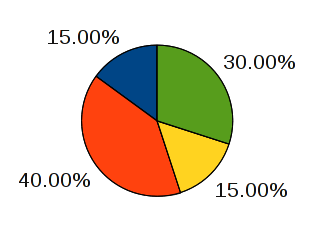

Sektordiagramm on diagramm, kus arve kujutatakse sektorite abil. Sektordiagrammi kasutatakse põhiliselt protsentide kujutamiseks. Suurem sektor vastab suuremale protsendile tervikust ja väiksem sektor väiksemale protsendile.